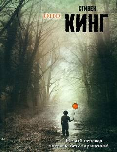

ОDerry shahridagi yovuzlik yillar o'tib yana qaytib keladi.
Stiven Kingning mashhur romani 'Оно' kichik Derry shahrida yashagan etti o'smirning dahshatli yovuzlik bilan to'qnashuvini tasvirlaydi. Yillar o'tib, ular katta bo'lishgan, ammo o'tmishdagi qo'rquv qaytib keladi va ularni yana shu shaharga tortadi. Roman yovuzlik, do'stlik va bolalik xotiralari haqida.